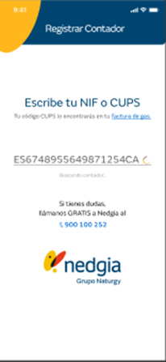
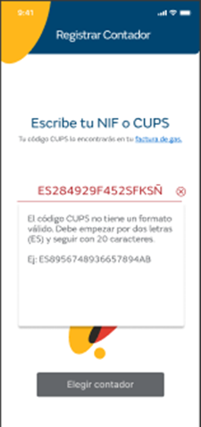
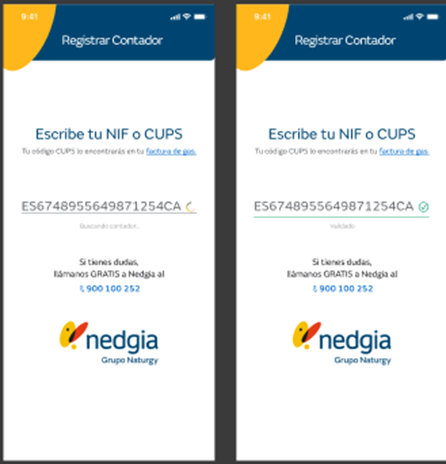

Si el usuario no dispone de un contador ya registrado, cuando entra en la app, se le mostrará directamente el primer paso del proceso de registro de contador. También se inicia el proceso desde la pantalla de contadores, cuando se selecciona la opción “Registra tu contador”.
Como primer paso el usuario ha de identificar el contador y puede hacerlo por:
NIF del titular del contrato de gas o
CUPS del contador gas

Si no tiene un formato válido, se muestra un mensaje de error y el campo se marca con error

Si el CUPS tiene un formato válido, se comprobará que pertenece a la distribuidora Nedgia
Si no pertenece, se muestra un mensaje de error y el campo se marca como erróneo

A partir de aquí es el mismo proceso indicado en el apartado anterior.